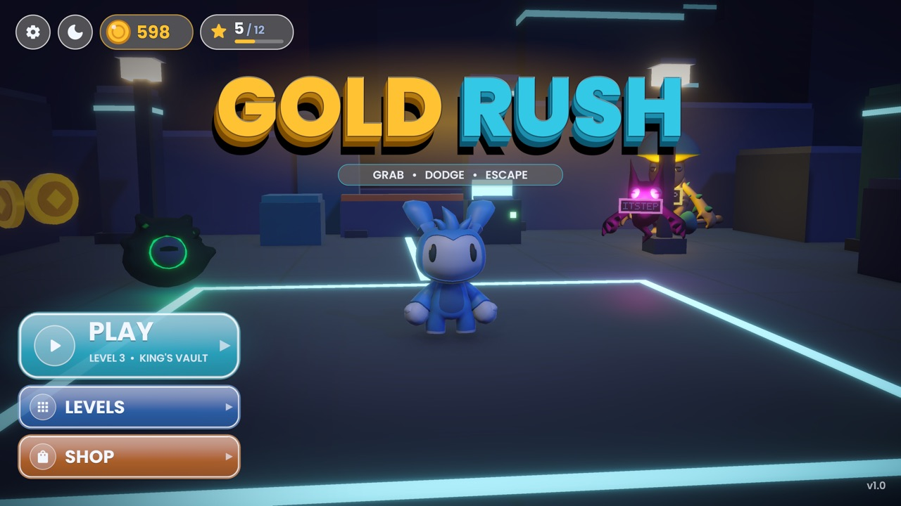
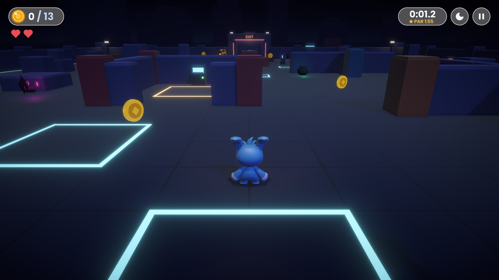

Create the project
A new Universal 3D project with the right packages, the input setting and the starter package. The hero and some kit pieces in a test scene.
Unity 6 tutorial · for beginners
Build a 3D game from an empty Unity project, one step at a time. You run through a level as a small hero, collect all the gold, avoid the monsters and escape through the exit gate before the time runs out.

A complete third-person game for PC and Android. A starter package gives you the art, the materials and a kit of ready-made prefabs. You build the rest yourself: the menus, the level, the player, the camera, the scripts, the monsters and the game UI.
You start with the main menu, because it is the first thing a player sees. Then you build the level and the gameplay. At the end you put the game UI (HUD and dialogs) on top, in the same style as the menu.


The course goes in this order: menu → level design → gameplay → gameplay UI → polish.
MenuAction) and save the game data.GameAction.GoldRush_Phase00_Project.unitypackage (in GoldRush_Export/Packages/): characters, sounds, icons, fonts, UI shapes, materials and the prefab kit.GoldRush_Export/Resources/ (see below).You start from an empty project. Do not import the packages of later phases into it.
The course has two parts. In the phases you learn how the game works. In the Practicals you build levels yourself.
Every phase has the same four parts:
Assets/GoldRush first). Then add the scenes to File → Build Profiles → Scene List, with MainMenu first.| Folder | What is inside | When you need it |
|---|---|---|
Packages/ | One package per phase (import it at the start of the phase) + GoldRush_Levels2to4, GoldRush_GameUIDialogs and GoldRush_Practicals_Solution. | Every phase and the Practicals |
Resources/Scripts/Final/ | Every game script as plain .cs files, to read outside Unity or to copy into your own project. | Optional |
Resources/Scripts/Helpers/, Phases/ | Script copies for teachers who want students to build parts by hand. | Optional (teachers) |
Assets/GoldRush/Resources. That one is a special Unity folder: scripts load files from it by name (for example GoldRushAssets).Every phase has a package in GoldRush_Export/Packages/. You import it at the start of the phase. It holds the whole project as it is at the end of that phase: the art, the scenes of that phase and (from phase 1 on) all the final scripts. Import it into a new, empty Universal 3D project (with AI Navigation and Active Input Handling = Both, see Phase 0) with Assets → Import Package → Custom Package….
| After phase | Package | Contains |
|---|---|---|
| 0 | GoldRush_Phase00_Project.unitypackage | Starter resources (no scripts) + Sandbox test scene |
| 1 | GoldRush_Phase01_MainMenu.unitypackage | MainMenu scene (3D stage + title screen), menu scripts |
| 2 | GoldRush_Phase02_MenuScreens.unitypackage | All menu screens, save data |
| 3 | GoldRush_Phase03_Level.unitypackage | Level1 built from the kit, markers, Scene List |
| 4 | GoldRush_Phase04_Player.unitypackage | Player prefab, Hero Animator Controller, third-person camera |
| 5 | GoldRush_Phase05_Coins.unitypackage | Coin prefab + script, GameManager, GoldRushAssets (sounds) |
| 6 | GoldRush_Phase06_Gate.unitypackage | Exit gate, timer, stars, save |
| 7 | GoldRush_Phase07_Monsters.unitypackage | NavMesh, 3 monster prefabs + controllers, EnemyAI |
| 8 | GoldRush_Phase08_PowerUps.unitypackage | 3 power-ups, particles |
| 9 | GoldRush_Phase09_GameUI.unitypackage | HUD, countdown, pause / win / lose dialogs (scene objects) |
| 10 | GoldRush_Phase10_Final.unitypackage | The complete game (= the teacher's version) |
11 phases, from an empty project to the complete game.
A new Universal 3D project with the right packages, the input setting and the starter package. The hero and some kit pieces in a test scene.

The title screen by hand: a 3D stage from the kit, a waving hero, the glass-style logo, PLAY / LEVELS / SHOP and the chips at the top left.


The Levels and Shop screens and the Settings dialog. Gold, stars and what you buy are saved.

A tour of the prefab kit, then Level 1 from kit pieces: walls, lamps, sun, sky, fog and the markers. PLAY now opens it.
The hero's Animator Controller by hand, a Player you move with WASD and Shift, and a third-person camera with mouse look.
Spinning coins in every CoinSpot, the pickup sound and the GameManager that counts them (in the Console for now).
The gate opens after the last coin. The timer, stars, gold and the save, then back to the menu.

A NavMesh and three monsters that patrol, chase and search, each with an ITSTEP badge. Hearts for the hero.
SPEED, GHOST and MAGNET power-ups, and particles: sparkles, dust, a hit cloud and confetti.

The HUD (coins, hearts, timer, day/night, pause), the 3-2-1-GO intro, pause, win and lose dialogs, toasts and world markers. Built as GameObjects, like the menu.


Day and night while you play, touch controls, music, Levels 2–4, the final scripts and a build for PC and Android.
Four practicals to do on your own, in class or at home. Each one practises what you learned in a group of phases. Start with the overview.
Something does not work? See Troubleshooting. New word? See the Glossary. Done? Try the Exercises.